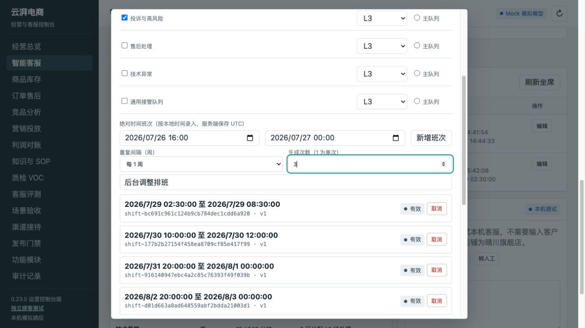
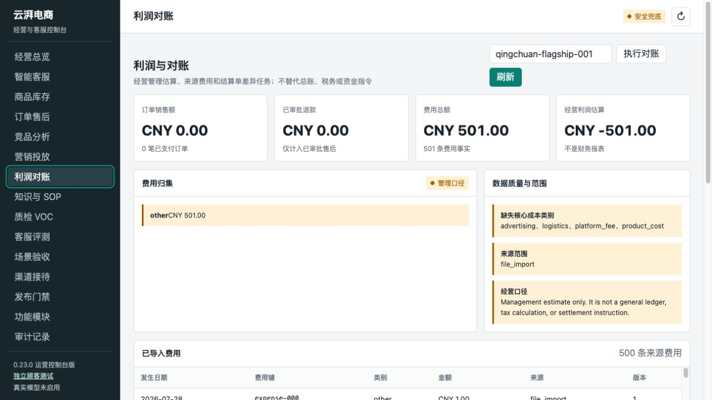

LLM 流式错误处理
复验行为
- 流式 HTTP 错误体可读取供应商 code。
- 限流/5xx/传输故障进入
retry_later。 - 无已验证结果时不自动占用人工队列。
- 后置验证成功的动作结果不会丢失。
证据入口
tests/test_llm.py
tests/test_react_graph.py
tests/test_agent.py
✓ 集成回归通过
通用渠道适配器 SDK
契约覆盖
- 能力版本、验签、防重放、去重与回放。
- 标准信封、发送命令与 confirmed/rejected/uncertain 回执。
- 注册表路由、限流声明和平台隔离。
实际查询入口
GET /v1/channels/adapters
启用：MOCKCHAT_ENABLED=true
密钥：MOCKCHAT_SECRET
✓ 双适配器回归通过
macOS/Linux 快速启动
最短操作路径
python3.11 -m venv .venv
source .venv/bin/activate
python -m pip install -e '.[dev]'
bash scripts/start-glm-coding-test.sh
保护条件
- 缺少 MODEL_API_KEY 时启动前退出。
- 只监听 127.0.0.1:8104。
- 必须使用项目虚拟环境解释器。
✓ 文档与脚本已合并
坐席周期批量排班

订单人工客服状态可见
专项复验输出
customer_service.status = processing
customer_service.label = 客服处理中
task_status = working
事实保持不变
order_status = shipped
payment_status = paid
after_sales = []
✓ 未创建售后记录
利润报告完整计入 501+ 条费用

统一渠道会话与可信上下文信封
支持的 message_kind
text · image · audio · video
goods_card · order_card · system · unknown
安全处置
- 仅 text 可供 Agent 阅读。
- 其他类型记录脱敏占位符并转人工。
- 上下文只接受 platform 与 shop_id。
✓ 双适配器验证通过
知识灰度发布
复验生命周期
begin 50% → in bucket 命中 candidate
out bucket / 无 rollout unit → baseline
ramp 100% → 全量 candidate
状态与保护
- complete 原子激活候选并退役基线。
- rollback 恢复基线，候选可再次灰度。
- 同 key 只允许一个活动灰度。
✓ 生命周期通过
SOP 渠道灰度发布
实际行为
10% → 稳定会话桶选择 v1/v2
100% → 新会话解析到 v2
complete → v2 active / v1 retired
保护条件
- 未批准候选不能灰度。
- 同一定义不能并行两个灰度。
- 乐观锁版本冲突返回 409。
✓ run 固定验证通过
商品/SKU 顾问
专项场景
问题：两款蓝牙耳机有什么区别？
命中：两款耳机；排除：保温杯。
差异：续航、降噪；同时返回价格。
证据约束
catalog:{row}:v{version}
- 重复调用证据 ID 稳定。
- 进入 context bundle 与 evidence。
- 店铺/租户隔离。
✓ 顾问回归通过
商品自然语言模糊检索
顾客输入
“你们家的空气炸锅多少钱？”
“黑色的还有吗？”
Graph 先调用 search_products。
受控输出
- 候选 SKU、售价、状态与属性。
- 只在可信 store_id 范围查询。
- 精确查询再交给 get_product_facts。
✓ 工具与策略回归通过